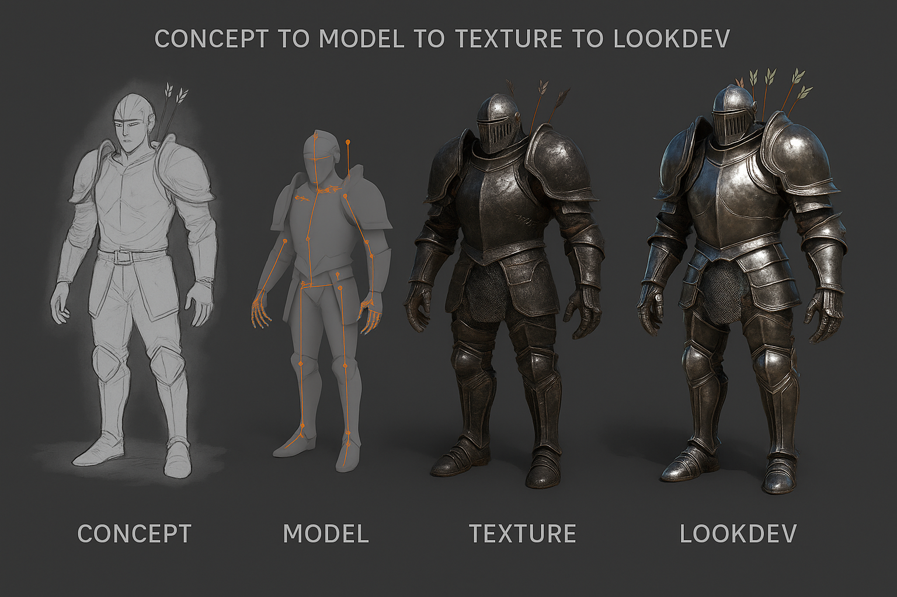
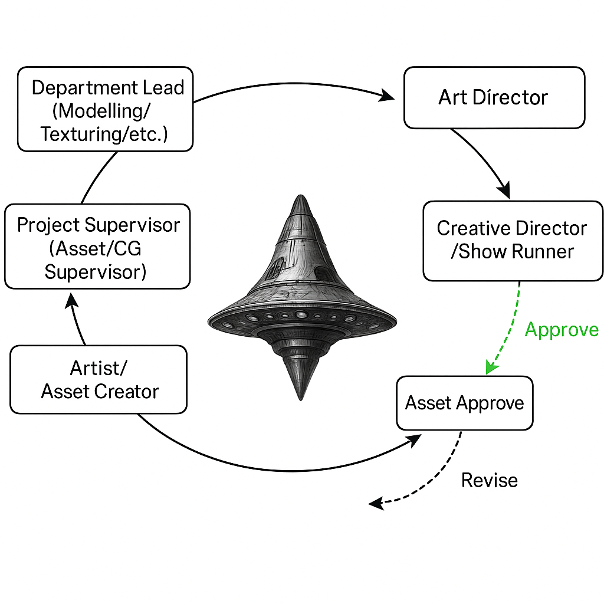

Introduction To CGI Asset Management
Pragmatic and contextual VFX pipeline infrastructure with emphasis on studio practices
Concepts and Terminology
(All VFX involve CGI today, but not all CGI is part of a VFX process.)
Computer-Generated Imagery (CGI)
- Technology roots trace back to the 1960s.
- Term “CGI” was coined to distinguish computer-created visual content from traditional hand-drawn animation and practical effects.
- CGI encompasses various techniques including 3D modeling, digital compositing, motion capture, etc.
- The term has evolved to include both photorealistic and stylized digital content across transmedia platforms.
 Ivan Sutherland’s Sketchpad (1963)
Ivan Sutherland’s Sketchpad (1963)
Earliest instances of a visual flight simulator
 The earliest computer graphics applications were military-focused.
The earliest computer graphics applications were military-focused.
Visual Effects (VFX)
- 1890s-1920s: “Trick Photography” or “Photographic Effects”
- 1930s-1960s: “Special Effects” (covering both practical and optical effects)
- 1970s-1980s: “Optical Effects” for post-production work
- 1990s: “Visual Effects” (VFX) becomes standard industry terminology
- 2000s: Sub-categories emerge (Digital VFX, Practical VFX, Hybrid VFX)
- 2010s: “Digital Effects,” “Post-VFX,” and “Virtual Production” terminology
Modern VFX Categories
- Compositing: Combining multiple image elements
- Matte Painting: Creating digital backgrounds and environments
- Motion Capture: Recording actor movements for digital characters
- Simulation: Physics-based effects (water, fire, destruction)
- Digital Doubles: CGI replicas of actors
- Virtual Production: Real-time VFX during filming
CGI Vs VFX
- CGI is the digital content creation aspect.
- VFX is the composite process that integrates CGI with real-world footage and effects.
Artificial Intelligence
- Rotoscoping (e.g., AI roto in Nuke, After Effects)
- Asset creation (e.g., AI-generated textures, models)
- Animation (e.g., markerless motion capture)
- Compositing (e.g., segmentation, relighting, upscaling)
- Shot planning (e.g., generative storyboards, previs)
Some tools that are in use:
- https://radicalmotion.com
- https://lumalabs.ai
Role Of CGI in VFx
- CGI in Films
- CGI in Episodes (Television series, OTT series, etc)
- CGI in Ads
- CGI in Games
CGI in Films
- “Westworld” (1973)
- “Futureworld” (1976)
- “Star Wars” (1977)
- “Tron” (1982)
- “The Last Starfighter” (1984)
- “Young Sherlock Holmes” (1985)
- “Toy Story” (1995)
- “Jurassic Park” (1993)
- “The Matrix” (1999)
- “Avatar” (2009)
- “The Jungle Book” (2016)
CGI in Episodes (Television series, OTT series, etc)
- “The X-Files” (1993-2002)
- “Game of Thrones” (2011-2019)
- “The Mandalorian” (2019-present)
- “Stranger Things” (2016-present)
CGI in Advertisements
CGI in Games


Pipeline
(structured flow of data, assets, and tasks across departments using tools, scripts, and file conventions.)
VFX Pipeline
Pre-production
- Concept
- Previs
- Production Planning
- Technical planning
Production
- Asset creation
- Layout
- Animation
- FX
- Lighting
Post-production
- Compositing
- Color Grading
AI in the Pipeline
| Stage | AI Role | Tools / Frameworks |
|---|---|---|
| Pre-production | Concept generation, previs | Sora, DALL·E, Midjourney |
| Modeling | Shape generation, photogrammetry, retopo | Kaedim, Meshy, Luma AI |
| Texturing | Procedural texturing, upscaling, inpainting | Adobe Firefly, AI Texture synthesis |
| Animation | Markerless mocap, facial AI | DeepMotion, RADiCAL, Wav2Lip |
| Compositing | Auto roto, relighting, segmentation | Runway ML, Nuke + CopyCat |
Pipeline Architecture
A pipeline architecture in VFX defines the structured flow of data, assets, and tasks across departments using tools, scripts, and file conventions. Pipelines are relevant to project management, especially in domains like VFX, animation, game development, and software engineering.
- Modular: each department functions as a module
- Version-controlled: assets and scenes track revisions
- Automated: scripts and tools handle repetitive tasks
- Cross-software: Maya, Houdini, Nuke, etc., integrated
- Scalable: from indie studios to multi-site facilities
Digital Production Pipelines
- Linear [Tasks follow a strict sequence (Waterfall model)].
- Non-linear or General [Tasks run in parallel or with iterative loops].
Asset Types and Terminology
An asset in VFX refers to any reusable production element—characters, props, environments, vehicles, etc.
- Models
- Textures
- Lookdev (Renders)
- Rigs
- Animations (Anim Cache)
- Plates
- Scan Data
| Category | Description | Examples |
|---|---|---|
| Hero Assets | High-detail, focus objects requiring meticulous modeling/texturing. | Main characters, key props. |
| Background Assets | Environment fillers, optimized for performance. | Crowds, foliage, distant buildings. |
| FX Assets | Dynamic elements like fire, smoke, or particle systems. | Explosions, weather effects. |
| Asset Type | Key Characteristics | Common Examples |
|---|---|---|
| Static Assets | No deformation; optimized for texture resolution and LOD | Buildings, furniture |
| Dynamic Assets | Require rigging, skinning, and animation-friendly topology | Characters, vehicles, cloth |
Production Note: “Static object modeling prioritizes photogrammetric accuracy and modular reuse, reducing asset generation time in large-scale environments.”
Real world use of assets
Asset Lifecycle

General Cycle of a 3D asset
Concept → Modeling → Texturing → Rigging → LookDev → Approval → Publishing → Integration → Final Render
↑ ↓
Versioning ← QA/Feedback ← RevisionsArt Directing Assets
Art directing an asset is the process of shaping its design, form, style, and visual qualities through feedback and decision-making by an art director, ensuring it fits the visual language and narrative tone of the production.
Caching
Caching is saving a snapshot of the work.
Versioning
Asset production is iterative, with changes tracked and managed systematically.
Publishing
Publihing is the act of finalizing and distributing an asset for downstream use.
An artist/department in the pipeline publishes a version of the asset. The the feedback cycle might give a retake on the asset or approve it.
- Artist Fidelity
- Performance Optimization
- Asset approval leads, supervisors, directors.
Feedback Cycle
Approval Conditions:
- ✅ Approved → Asset is published
- 🔁 Retake → Feedback is passed down the chain for revision
- 📌 Conditional Approval → Used but flagged for future fixes
Asset Status Tracking
 {.fig-align=“center” }
{.fig-align=“center” }
File Structure and Naming Conventions
{show}/{seq}/{shot}/assets/{asset_type}/{asset_name}/v###/<asset_name_version.extension>)Pipeline Tools
Job Schedulers